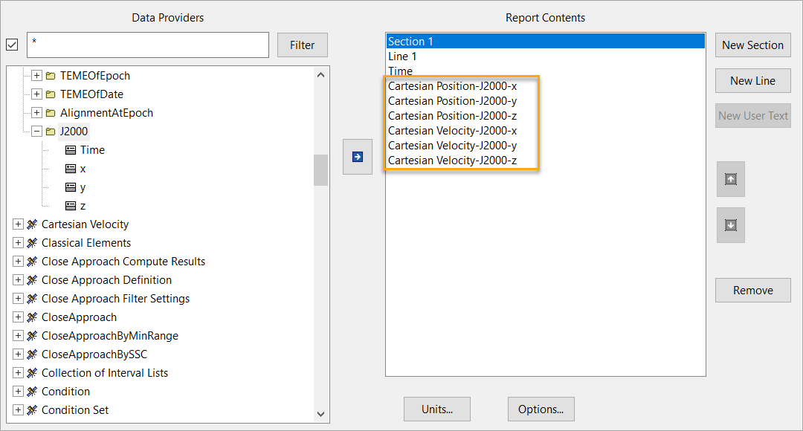
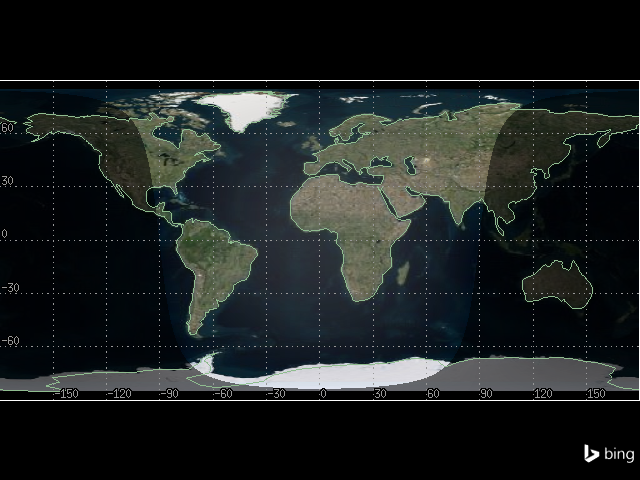
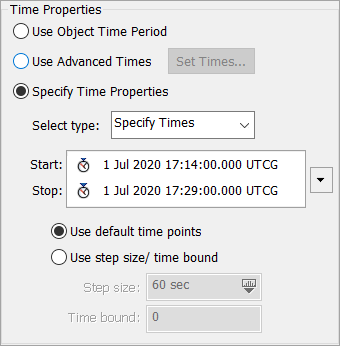
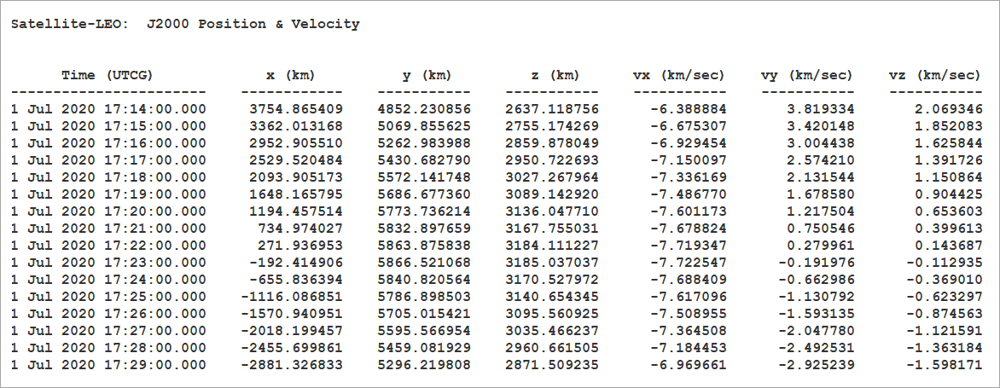

Results and graphs#
This tutorial demonstrates how the STK object model provides direct access to the data provider tools exposed by each object in STK that form the foundation of the report styles in the GUI.
The following example uses the J2000 Position Velocity report to demonstrate the retrieval of data through the object model. This report consists of specific J2000 data provider elements from two groups: Cartesian Velocity and Cartesian Position.

Launch a new STK instance#
Start by launching a new STK instance. In this example, STKEngine is used.
[1]:
from ansys.stk.core.stkengine import STKEngine
stk = STKEngine.start_application(no_graphics=False)
print(f"Using {stk.version}")
Using STK Engine v13.1.0
Create an STK scenario using the STK Root object:
[2]:
root = stk.new_object_root()
root.new_scenario("GraphsAndResults")
Once the scenario is created, it is possible to show a 3D graphics window by running:
[3]:
from ansys.stk.core.experimental.jupyterwidgets import GlobeWidget
globe_widget = GlobeWidget(root, 640, 480)
globe_widget.show()
[3]:

Show a 2D graphics window by running:
[4]:
from ansys.stk.core.experimental.jupyterwidgets import MapWidget
map_widget = MapWidget(root, 640, 480)
map_widget.show()
[4]:

Set the scenario time period#
Using the newly created scenario, set the start and stop times. Rewind the scenario so that the graphics match the start and stop times of the scenario:
[5]:
scenario = root.current_scenario
scenario.set_time_period("1 Jul 2020 17:14:00.00", "1 Jul 2020 17:29:00.00")
root.rewind()
Adding a satellite to the scenario#
Now that a new scenario is available, add a new satellite:
[6]:
from ansys.stk.core.stkobjects import STKObjectType
satellite = root.current_scenario.children.new(
STKObjectType.SATELLITE, "SatelliteTwoBody"
)
Ensure that the satellite’s associated times use the scenario’s times as well.
[7]:
from ansys.stk.core.stkobjects import PropagatorTwoBody, PropagatorType
satellite.set_propagator_type(PropagatorType.TWO_BODY)
propagator = PropagatorTwoBody(satellite.propagator)
propagator.ephemeris_interval.set_start_and_stop_times(
"1 Jul 2020 17:14:00.00", "1 Jul 2020 17:29:00.00"
)
propagator.propagate()
Setup data providers for use in the object model#
To retrieve the data for the J2000 Position Velocity report, setup its specific data providers for use in the Object Model. Use the various DataProvider interfaces to do this:
[8]:
from ansys.stk.core.stkobjects import DataProviderGroup
cart_vel = DataProviderGroup(satellite.data_providers["Cartesian Velocity"])
cart_pos = DataProviderGroup(satellite.data_providers["Cartesian Position"])
cart_vel_j2000 = cart_vel.group.item("J2000")
cart_pos_j2000 = cart_pos.group.item("J2000")
The DataProviderCollection and DataProviderGroup variables can be used to access information about the J2000 Position Velocity report.
[9]:
print('Some data providers available for the the "SatelliteTwoBody" satellite:')
data_providers = list(satellite.data_providers)
for index in range(len(data_providers)):
if index > 9:
print(f"\t...and {len(data_providers) - 10} more ")
break
print("\t" + str(data_providers[index].name))
print("Some data providers within the Cartesian Velocity group:")
for item in cart_vel.group:
print("\t" + str(item.name))
print("Some data providers within the Cartesian Position group:")
for item in cart_pos.group:
print("\t" + str(item.name))
Some data providers available for the the "SatelliteTwoBody" satellite:
Access Listing
Active Constraints
All Constraints
Angles
Articulation
Astrogator Accel Hist
Astrogator Log
Astrogator MCS Ephemeris Segments
Astrogator Maneuver Ephemeris Block Final
Astrogator Maneuver Ephemeris Block History
...and 151 more
Some data providers within the Cartesian Velocity group:
TrueOfDateRotating
Fixed
ICRF
MeanOfDate
MeanOfEpoch
TrueOfDate
TrueOfEpoch
B1950
TEMEOfEpoch
TEMEOfDate
AlignmentAtEpoch
J2000
Some data providers within the Cartesian Position group:
TrueOfDateRotating
Fixed
ICRF
MeanOfDate
MeanOfEpoch
TrueOfDate
TrueOfEpoch
B1950
TEMEOfEpoch
TEMEOfDate
AlignmentAtEpoch
J2000
The basic interfaces are now setup to compute information from the data providers that the report is using. Next, cast these objects to provide the IDataProvider interface with inputs so it can compute the proper data.
Data provider “PreData” inputs#
Some data providers require input data before the calculation can provide data results. This data is known as PreData. There are two ways to ascertain if PreData is required for a particular data provider:
Refer to the data provider documentation which provides the format of the PreData if any is required.
Retrieve the data provider schema and parse it for PreData tags.
Use the DataProviderCollection.get_schema() method to get the schema for all STK data providers.
[10]:
schema = str(satellite.data_providers.get_schema())
Once the format of the PreData is known, set the IDataProvider.pre_data property. This property must be set before issuing the data provider’s calculation method.
Set the pre_data property on the IDataProvider interface#
The following example demonstrates setting the satellite’s object path as the PreData for the RIC Coordinates data provider and then calls the data provider’s computation execution method.
[11]:
from ansys.stk.core.stkobjects import DataProviderResult, DataProviderTimeVarying
provider = DataProviderTimeVarying(satellite.data_providers["RIC Coordinates"])
provider.pre_data = "Satellite/SatelliteTwoBody"
result = provider.execute("1 Jul 2020 17:14:00.00", "1 Jul 2020 17:29:00.00", 1)
Data provider time inputs#
In the Time Period section of the Report window in STK, highlight J2000 Position Velocity and click the Specify Time Properties radio button. The J2000 Position Velocity report uses a time period to provide the underlying data provider’s information about what data to compute. Provide the same information to the object model data providers.

Retrieve the data#
There are three ways to compute the data, depending on the data provider type. The first method requires a time interval and step size, the second requires only a time interval, and the third is independent of time.
Provide input information to the data providers by casting the data provider interfaces to the proper execution interface. In the case of the Cartesian Velocity and Cartesian Position data providers, cast to DataProviderTimeVarying:
[12]:
vel_time_var = DataProviderTimeVarying(cart_vel_j2000)
pos_time_var = DataProviderTimeVarying(cart_pos_j2000)
Retrieve the information from the data providers. The data is always returned as a DataProviderResult object. Provide the DataProviderTimeVarying.execute() method of the DataProviderTimeVarying interfaces with the data provider inputs (start time, stop time, and step size):
[13]:
vel_result = vel_time_var.execute("1 Jul 2020 17:14:00.00", "1 Jul 2020 17:29:00.00", 1)
pos_result = pos_time_var.execute("1 Jul 2020 17:14:00.00", "1 Jul 2020 17:29:00.00", 1)
vel_result and pos_result now contain the data from the J2000 Cartesian Velocity and Cartesian Position data providers, more data than the original report contained.
Retrieve specific elements#
Recall that the original Cartesian Position Velocity report contained only four elements of the Cartesian Velocity J2000 group: x, y, z, and speed. Similarly, the Cartesian Position J2000 data provider contained within your report style only contains three elements: x, y, and z.
When the J2000 data provider of Cartesian Velocity was executed, seven elements were retrieved instead of the four specifically contained in the report, adding the time, radial, and intrack elements to the DataProviderResult. To be precise as possible, DataProviderResultshould contain only the elements which were contained in the original report. To do this, use theDataProviderTimeVarying.execute_elements()` method.
First, specify in an array the elements to retrieve from the data provider. Next, pass the array into DataProviderTimeVarying.execute_elements():
[14]:
vel_elems = ["x", "y", "z", "speed"]
pos_elems = ["x", "y", "z"]
vel_result = vel_time_var.execute_elements(
"1 Jul 2020 17:14:00.00", "1 Jul 2020 17:29:00.00", 60, vel_elems
)
pos_result = pos_time_var.execute_elements(
"1 Jul 2020 17:14:00.00", "1 Jul 2020 17:29:00.00", 60, pos_elems
)
The original data from the J2000 Position Velocity report is now stored in DataProviderResult objects and ready to traverse.
Traverse the result data#
Review the original report. The data in the report consisted of time intervals with various elements.

Similarly, the result needs to be cast to the appropriate interface to make use of the data. In the case of the J2000 Cartesian Velocity and Position data providers, that interface is the DataProviderResultIntervalCollection. Since each data provider result shares the same result type, consolidate the data traversal into one method, which takes a DataProviderResult:
[15]:
def write_interval_data(result: DataProviderResult):
"""Traverse and write the data stored in a DataProviderResult."""
intervals = result.intervals
# iterate through the intervals
for interval in intervals:
print(f"Interval from {interval.start_time} to {interval.stop_time}:")
# iterate through the datasets stored in the interval
for data_set in interval.data_sets:
print(
f"\tFound {data_set.count} values for {data_set.element_name} (element type {data_set.element_type}, {data_set.dimension_name} dimension):"
)
# get the values stored in the datasets
values = data_set.get_values()
# iterate through the array of values
for value in values:
print(f"\t\t{str(value)}")
Note: the type of data returned by the DataProvider can be determined using the DataProviderResult.category property, which returns an enumeration describing the interface. The DataProviderResult.value property is then cast to one of three interfaces, depending on the category enumeration: DataProviderResultIntervalCollection, DataProviderResultSubSectionCollection, or DataProviderResultTextMessage.
Complete the output#
Finally, call the method with DataProviderResult arguments. The data from the J2000 Position Velocity report is traversed and output:
[16]:
print("Position Results:")
write_interval_data(pos_result)
print("Velocity Results:")
write_interval_data(vel_result)
Position Results:
Interval from 1 Jul 2020 17:14:00.000 to 1 Jul 2020 17:29:00.000:
Found 16 values for x (element type 0, Distance dimension):
6678.136999999843
6662.0555962110375
6613.888739305161
6533.8684080471585
6422.379992283994
6279.96043684986
6107.295655559587
5905.2172277455775
5674.698393247611
5416.849365144897
5132.911982804197
4824.253730996136
4492.361153884821
4138.832695609372
3765.3710019389473
3373.774720076172
Found 16 values for y (element type 0, Distance dimension):
1.1889069058033974e-07
407.04478176122734
812.129175041251
1213.3022331192808
1608.6318467297879
1996.2140495065125
2374.1821877694038
2740.7159106064864
3094.049936955603
3432.4825574607376
3754.3838301584196
4058.203430521383
4342.478118052342
4605.8387834685645
4847.017042536039
5064.851344797643
Found 16 values for z (element type 0, Distance dimension):
-0.0014502934943832727
221.00581305277632
440.94867944942007
658.7678712566681
873.4143387682304
1083.854312591107
1289.0742824331235
1488.0858783196206
1679.9306307306301
1863.6845867329937
2038.4627598754578
2203.423392415386
2357.7720093495554
2500.7652447242353
2631.7144217964624
2749.9888698039244
Velocity Results:
Interval from 1 Jul 2020 17:14:00.000 to 1 Jul 2020 17:29:00.000:
Found 16 values for x (element type 0, Rate dimension):
8.004589941580925e-07
-0.5358323496286873
-1.0690848512238271
-1.5971884807662238
-2.11759981243184
-2.627812467649594
-3.125369186195321
-3.607873660722812
-4.073002077737629
-4.518514309428885
-4.942264702459237
-5.342212411751398
-5.716431229502031
-6.063118862085906
-6.380605610170424
-6.667362410237169
Found 16 values for y (element type 0, Rate dimension):
6.789530467981203
6.773180772419215
6.724210428321562
6.64285528416731
6.529507158461344
6.384711952678248
6.209167022119151
6.003717817344789
5.769353812359358
5.5072037391565125
5.2185301515775535
4.904723344663729
4.567294658788225
4.207869200815429
3.8281780173443996
3.430049757729453
Found 16 values for z (element type 0, Rate dimension):
3.6864138594270974
3.6775368163818443
3.6509482076793662
3.6067760880237647
3.5452331969297295
3.46661593413732
3.3713029321066124
3.2597532324673226
3.1325040752058664
2.990168311237481
2.8334314508248304
2.663048362058375
2.4798396352990832
2.284687631092899
2.0785322305907865
1.862366308940962
Found 16 values for speed (element type 0, Rate dimension):
7.725760229169806
7.725760229169804
7.725760229169806
7.725760229169805
7.725760229169806
7.725760229169807
7.725760229169802
7.725760229169804
7.725760229169804
7.725760229169806
7.725760229169802
7.725760229169803
7.725760229169802
7.725760229169803
7.725760229169806
7.725760229169804
As previously noted, it is up to you to decide in what unit the data is returned. Issuing the following command before calling write_interval_data() changes the data that is output to be displayed in meters per second, rather then kilometers per second.
[17]:
root.units_preferences.set_current_unit("DistanceUnit", "m")
write_interval_data(pos_result)
write_interval_data(vel_result)
Interval from 1 Jul 2020 17:14:00.000 to 1 Jul 2020 17:29:00.000:
Found 16 values for x (element type 0, Distance dimension):
6678136.999999844
6662055.596211038
6613888.739305161
6533868.408047158
6422379.992283994
6279960.4368498605
6107295.655559587
5905217.227745578
5674698.393247612
5416849.365144897
5132911.982804197
4824253.730996137
4492361.153884821
4138832.6956093726
3765371.0019389475
3373774.7200761717
Found 16 values for y (element type 0, Distance dimension):
0.00011889069058033975
407044.78176122735
812129.175041251
1213302.2331192808
1608631.8467297878
1996214.0495065125
2374182.1877694037
2740715.9106064863
3094049.936955603
3432482.5574607374
3754383.8301584194
4058203.430521383
4342478.118052342
4605838.783468565
4847017.042536039
5064851.344797643
Found 16 values for z (element type 0, Distance dimension):
-1.4502934943832726
221005.81305277633
440948.6794494201
658767.871256668
873414.3387682304
1083854.3125911069
1289074.2824331236
1488085.8783196206
1679930.6307306301
1863684.5867329936
2038462.7598754577
2203423.392415386
2357772.0093495552
2500765.2447242355
2631714.4217964625
2749988.8698039246
Interval from 1 Jul 2020 17:14:00.000 to 1 Jul 2020 17:29:00.000:
Found 16 values for x (element type 0, Rate dimension):
0.0008004589941580924
-535.8323496286873
-1069.0848512238272
-1597.1884807662238
-2117.59981243184
-2627.812467649594
-3125.369186195321
-3607.873660722812
-4073.002077737629
-4518.514309428885
-4942.264702459237
-5342.212411751399
-5716.431229502031
-6063.118862085906
-6380.6056101704235
-6667.36241023717
Found 16 values for y (element type 0, Rate dimension):
6789.530467981203
6773.180772419215
6724.210428321561
6642.85528416731
6529.507158461344
6384.711952678248
6209.167022119151
6003.717817344789
5769.353812359358
5507.203739156513
5218.530151577554
4904.723344663729
4567.294658788225
4207.8692008154285
3828.1780173443994
3430.0497577294527
Found 16 values for z (element type 0, Rate dimension):
3686.4138594270976
3677.5368163818443
3650.948207679366
3606.7760880237647
3545.2331969297293
3466.61593413732
3371.3029321066124
3259.7532324673225
3132.5040752058662
2990.168311237481
2833.4314508248303
2663.048362058375
2479.839635299083
2284.687631092899
2078.5322305907866
1862.366308940962
Found 16 values for speed (element type 0, Rate dimension):
7725.760229169806
7725.760229169804
7725.760229169806
7725.760229169805
7725.760229169806
7725.760229169807
7725.760229169802
7725.760229169804
7725.760229169804
7725.760229169806
7725.760229169802
7725.760229169803
7725.760229169802
7725.760229169803
7725.760229169806
7725.760229169804